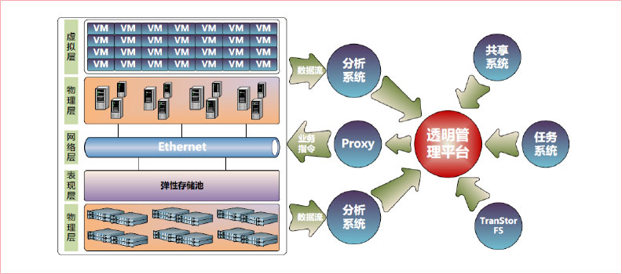
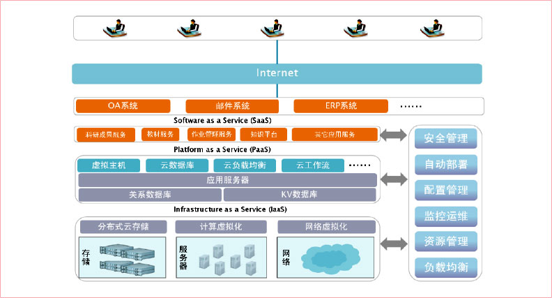

透明云教室的主要目是提供IAAS云计算平台相关的应用功能，包括五个子系统，分别是：云任务、析存储共享和云管理系统。五个子系统相互协作，共同完成IAAS平台的服务器虚拟化、存储虚拟化、网络虚拟化及平台管理等相关功能。其总体逻辑架构图如下：
透明云教室向广大师生提供的是IAAS服务，它对存储、CPU、网络等一系列硬件设备进行虚拟化，以虚拟机服务的形式提供给在校师生。透明管理系统负责对虚拟机进行安全管理、自动部署、配置管理、监控运维、资源调度等管理工作。
在透明云教室基础上，可以对教学资源进行面向服务的封装和改造，在云平台上提供服务和应用方式，构建基于云的教学资源平台的三层模型。PAAS 平台提供虚拟主机、云数据库、云工作流、应用服务器等基础架构，在校师生可在此基础架构之上建设新的应用或者扩展已有的应用，可大大节省开发、购买成本。SAAS平台提供课件服务、知识平台、教材服务、作业管理服务、科研成果服务等，在校师生可通过互联网使用这些应用灵活可靠的支持服务和强大的可扩展性将为师生的科研学习带来便利，相应的也将降低应用的维护和运营成本。整个系统的架构示意图如下：
所有的虚拟机在逻辑上用千兆以太网连接一起统一通过管理网关连接到校园网中。
DHCP服务器负责统一管理和分配虚拟机的IP地址，这些IP地址，统一放入IP地址池中，可以按需进行自定义配置。
管理网关负责连接透明云教室与校园网，同时对两者进行隔离，按需控制流量。